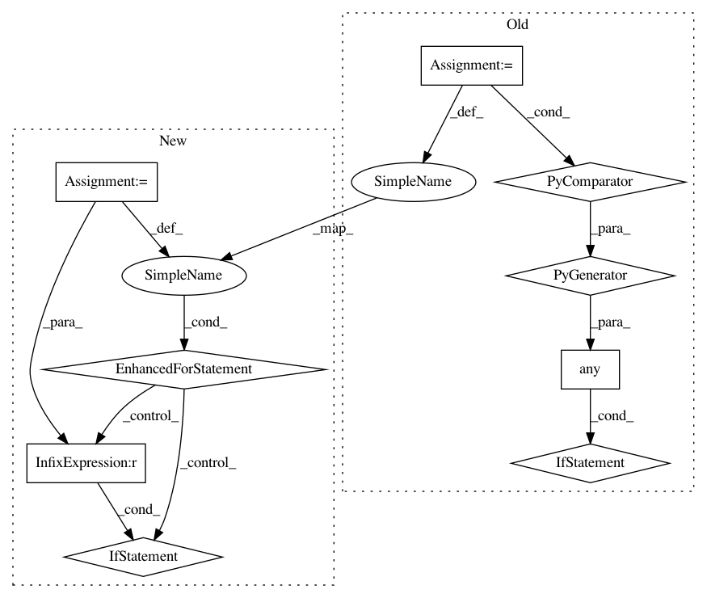

802a991087c8ba2620e2f98aa709af8f530f8b93,opt_einsum/blas.py,,can_blas,#Any#Any#Any#,10
Before Change
input_right = inputs[1]
rs = len(idx_removed)
if any(len(l) != len(s) for l, s in zip(inputs, sets)):
return False
// Cannot handle partial inner
if len(keep_left & keep_right):
return False
// DDOT
After Change
input_left, input_right = inputs
for c in set(input_left + input_right):
// can"t deal with repeated indices on same input or more than 2 total
nl, nr = input_left.count(c), input_right.count(c)
if (nl > 1) or (nr > 1) or (nl + nr > 2):
return False
// can"t do implicit summation or dimension collapse e.g.
// "ab,bc->c" (implicitly sum over "a")
// "ab,ca->ca" (take diagonal of "a")
if nl + nr - 1 == int(c in result):
return False
// Prefer einsum if not removing indices
// (N.B. tensordot outer faster for large arrays?)
if len(idx_removed) == 0:
return None
// Build a few temporaries
In pattern: SUPERPATTERN
Frequency: 3
Non-data size: 9
Instances
Project Name: dgasmith/opt_einsum
Commit Name: 802a991087c8ba2620e2f98aa709af8f530f8b93
Time: 2018-03-22
Author: john.gray.14@ucl.ac.uk
File Name: opt_einsum/blas.py
Class Name:
Method Name: can_blas
Project Name: reinforceio/tensorforce
Commit Name: 7deceb39597ea90e0f130448cf3616f0875b7f91
Time: 2017-10-28
Author: aok25@cl.cam.ac.uk
File Name: tensorforce/models/q_naf_model.py
Class Name: QNAFModel
Method Name: tf_regularization_losses
Project Name: home-assistant/home-assistant
Commit Name: 6c0f4c35f6e6ea8c2993c6582f2f983bc9c4c5ad
Time: 2017-09-23
Author: tommatheussen5@hotmail.com
File Name: homeassistant/components/sensor/systemmonitor.py
Class Name: SystemMonitorSensor
Method Name: update